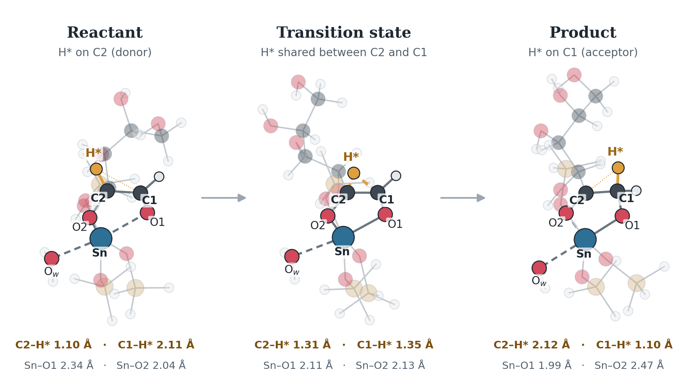
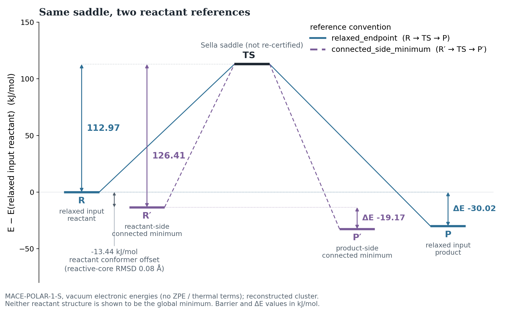
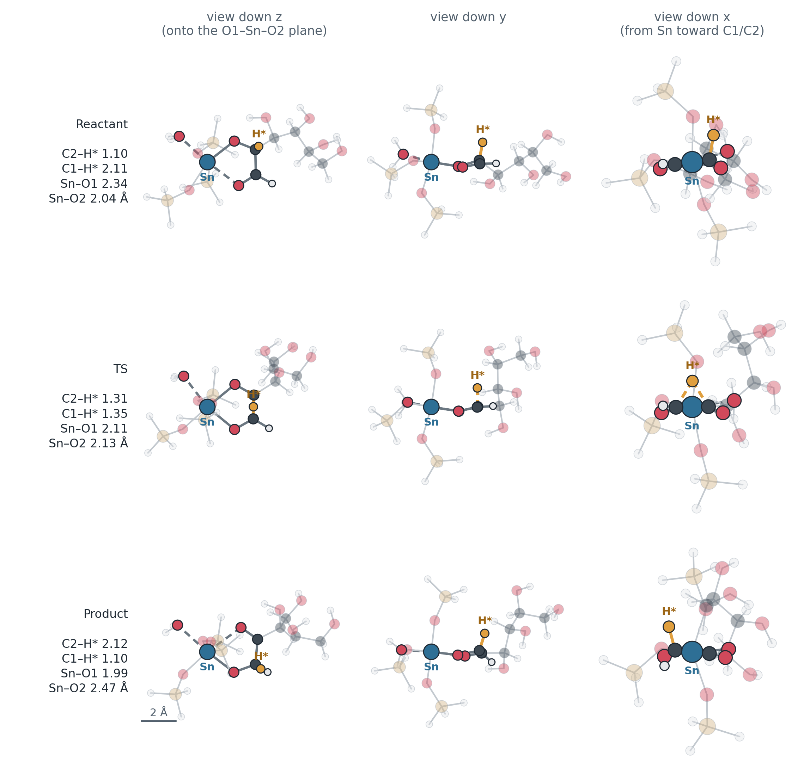

Current work — Sn-β glucose hydride transfer
Can MACE-OMOL or MACE-POLAR give a physically meaningful surface for the Sn-β-catalysed C2→C1 hydride transfer in glucose — the rate-limiting step of glucose-to-fructose isomerization?
Work in progress reconstructed model, not literature coordinates Reproduced MACE-POLAR energies from saved raw data Not re-certified saddle point Not yet run standardized OMOL / POLAR / xTB comparison

site/build_sn_beta_figures.py.
Where things stand
MACE-POLAR-1-S electronic energies in vacuum, recomputed from Tian’s saved raw energies:
112.97 kJ/mol barrier · relaxed_endpoint E(TS) − E(relaxed input reactant) ΔE(P−R) −30.02 kJ/mol
126.41 kJ/mol barrier · connected_side_minimum E(TS) − E(reactant-side minimum reached by relaxing away from the saddle) ΔE(P−R) −19.17 kJ/mol
−923 cm⁻¹ one imaginary mode · saved record Tian’s saved Hessian, dominated by H*; not recomputed by our pipeline
Why there are two barrier values

sweep/sn_beta_hydride/audit/tian_tt_test/tian_polar_summary.json, recomputed from Tian’s saved total energies.- The relaxed input reactant was relaxed from a hand-built guess. Relaxing away from the saddle reached a lower local minimum: a backbone torsion rotates by about 70°, while the C1/C2/H*/Sn core barely moves.
- Collaborator tables quote 126.4 / −19.2 kJ/mol, which is the side-minimum reference. The headline values in the original result file, 112.97 / −30.02 kJ/mol, use the relaxed endpoints. Both are kept, each with its label.
- A conformer check of the endpoints is needed before any barrier is compared at the ±10 kJ/mol level.
What is and is not established
Directly demonstrated — recomputed from the saved files, with no new calculation:
- The files are intact. All twelve saved files match their recorded checksums, and the energies stored in the structures agree with the result records.
- Both endpoints pass structural validation. They have the same composition and atom order, three intact O–SiH₃ caps, and six O around Sn. The hydride sits on C2 in the reactant and on C1 in the product.
- The barrier depends on the reference state (113.0 vs 126.4 kJ/mol; reaction energy −30.0 vs −19.2 kJ/mol). The 13.4 kJ/mol difference is conformational.
Supported interpretation The saddle is very likely a genuine hydride-transfer saddle. The saved records show one imaginary mode (−923 cm⁻¹), dominated by the transferring H, and relaxations away from it reach reactant-like and product-like minima. Our pipeline has not independently recomputed it, so it is not certified.
Not demonstrated These are not established:
- a DFT reference for this exact model and charge state
- that the reactant-side minimum is the lowest conformer (no conformer search has been done)
- any solvent effect for this model.
Why no method comparison is plotted Preliminary MACE-OMOL and GFN2-xTB values exist in a collaborator’s table, but no raw outputs are available, and the table does not say which reactant reference they use. A bar next to the MACE-POLAR side-minimum value would therefore imply a common convention that has not been established. They will be shown after the standardized reruns. The ≈77–78 kJ/mol implicit-solvent DFT value sometimes quoted has not been traced to a primary source.
Does the reconstructed chemistry look right?

sweep/sn_beta_hydride/audit/tian_tt_test/structure_views.png; generated by site/build_sn_beta_figures.py.- Hydride on C2 in the reactant (C2–H* 1.10 Å, C1–H* 2.11 Å)
- Shared between C2 and C1 at the transition state (1.31 / 1.35 Å)
- Hydride on C1 in the product (2.12 / 1.10 Å)
- At Sn, O1 and O2 swap roles as intended: Sn–O1 2.34 → 1.99 Å, Sn–O2 2.04 → 2.47 Å
- Reconstructed structures: hand-built and relaxed with MACE-POLAR-1-S, not original CPMD coordinates
From reconstructed structures to a certified barrier
Reconstructed R/P Tian’s POLAR-relaxed endpoints, provenance-labelled ✓ in place
→
Structure validation composition, mapping, caps, hydride state, Sn shell ✓ 0 errors on the real pair
→
Endpoint relaxation each method relaxes the same input POLAR: Tian’s saved run · others pending
→
CI-NEB 13 images, climbing image not yet run (Tian used a relaxed scan)
→
Sella refinement first-order saddle search POLAR: Tian’s saved saddle
→
Hessian mass-weighted; exactly one imaginary mode POLAR: saved record, not recomputed
→
±mode connectivity relax both ways off the saddle (not an IRC) POLAR: Tian’s saved side minima
→
Certified barrier both reference states, every method awaiting standardized runs
completed on the real structures by our pipeline present only in Tian’s saved MACE-POLAR run awaiting standardized production runs
Every stage is implemented, and the full chain runs end to end in the test suite on an analytic TEST-ONLY surface with a known saddle. No stage has been run by our pipeline on the Sn-β cluster with a foundation model yet.
Next experiments
- Run the same protocol with MACE-OMOL, MACE-POLAR and GFN2-xTB on the reconstructed model:
- relax the endpoints with each method
- 13-image CI-NEB, then Sella refinement
- mass-weighted Hessian and the ±mode connectivity check
- report barriers against both reference states.
- Independently reproduce the collaborator’s MACE-POLAR saddle and Hessian.
- Run a limited conformer check of the endpoints before any barrier is compared at the ±10 kJ/mol level.
- Receive and validate the authoritative endpoints when available, and repeat.
Background and provenance
Reference. S. H. Mushrif, J. J. Varghese, C. B. Krishnamurthy, Solvation dynamics and energetics of intramolecular hydride transfer reactions in biomass conversion, Phys. Chem. Chem. Phys. 17, 4961–4969 (2015), DOI 10.1039/C4CP05063K.
The immediate experiment is narrower than the original study: whether these models give a physically meaningful transition pathway between known initial and final states, initially without reproducing the full explicit-solvent metadynamics.
The reconstructed model. Tian built a 42-atom vacuum model by hand: open-chain glucose bound to a SiH₃-capped Sn site, C₆H₂₂O₁₀Si₃Sn, interpreting the literature drawing. He relaxed it with MACE-POLAR-1-S and ran a relaxed scan, a Sella saddle search and a Hessian. These are not the paper’s coordinates. The neutral singlet charge state is an inferred model choice.
Sources: audit/tian_tt_test/ (tian_polar_summary.json, input_validation.json, structure_views.png) and input/tian_tt_test/provenance.json.
Why new foundation models
MACE-OFF23, used for the Diels–Alder benchmark, was trained on organic chemistry and has no tin. MACE-OMOL-0 and MACE-POLAR-1 cover elements up to Z = 83, Sn included, and both take the system’s total charge and spin multiplicity as inputs. MACE-POLAR adds long-range electrostatics. This is the first test of the project’s pipeline on a catalytic, metal-containing system.
Infrastructure
Implemented and tested on software checks — not on the scientific system:
- MACE-OMOL wrapper validated (energy and forces through the project’s calculator layer)
- MACE-POLAR wrapper validated (with the pinned
graph_longrange0.4.0 dependency) - Sn element support confirmed for both models
- Total charge and multiplicity always set explicitly — the models otherwise default silently to a neutral singlet
- Strict structure validation that refuses to start a calculation on invalid input
- Endpoint optimizer
- Generic CI-NEB path stage (no hard-coded atom indices)
- Sella saddle refinement
- Mass-weighted Hessian validation of the saddle (standard)
Added after the reconstructed-structure audit, and tested on software checks:
- Structure-provenance policy: authoritative structures preferred; reconstructed ones accepted only with an explicit label, and only after validation and relaxation with the method in use
- Cluster-termination (cap) checks, a hydride-state label from the mapped atoms, and reactive-core distances in every validation report
- Barriers and reaction energies always reported against a named reference state — the relaxed input endpoints, or the minima connected to the saddle
- ±imaginary-mode connectivity check (a sanity check, not an IRC); the full normal-mode set is saved
- Conformer diagnostics: RMSD of the whole structure and of the reactive core, changed torsions, and energy offsets
- GFN2-xTB as a third method under the same protocol (dependency: xtb-python)
Blocked on authoritative information
Work in progress The production configuration for authoritative structures still stops before loading a model, by design, until these are supplied:
- Authoritative reactant coordinates
- Authoritative product coordinates
- Total charge
- Spin multiplicity
- Atom mapping (which atoms are C1, C2, the transferring hydride, Sn, and the coordinating oxygens)
- The original CPMD collective-variable parameters d₀, p, q
- Fixed / capped-atom policy for the cluster model
- The intended solvent / cluster representation for this experiment
What the literature does and does not establish
The paper itself is closed access and has not been read in full; the points below come from its abstract and from a thesis that reproduces its Fig. 1 (M. A. Y. Ali, MSc thesis, University of Alberta, 2025). Nothing here has been checked against the paper’s full text.
- Literature Protocols. The paper uses CPMD-metadynamics with explicit water or methanol, a CPMD-metadynamics run without solvent, and implicit-solvent DFT (abstract). The thesis’s own dataset is a 20,000-timestep gas-phase run; whether it is the paper’s solvent-free run is not established.
- Literature, as drawn Model. The thesis figure adapted from the paper draws the site as a SiH₃-capped Sn cluster, Sn(–O–SiH₃)₃, with open-chain glucose bound through its C1 and C2 oxygens and the water formed at the site remaining on Sn.
- Literature, secondary Collective variables. CV1 is the coordination number of C1 with the two hydrogens H1 and H2; CV2 is the coordination number of C2 with the same two hydrogens, using CPMD’s rational coordination function.
- Unknown CV parameters d₀, p, q. The project’s code computes these CVs with placeholder parameters that are explicitly flagged as unconfirmed, and refuses to compare against the reference basin values until the originals are supplied.
- Unknown Charge and multiplicity — not stated in either source.
Not a reference value The “≈82 kJ/mol barrier” sometimes quoted for this reaction comes from data tips on the thesis’s gas-phase metadynamics free-energy plot, not from a verified published value. It is a free-energy difference from a biased-sampling run; an endpoint-to-endpoint NEB or Sella calculation gives a potential-energy barrier, and the two are not directly comparable.
The code and its tests are in sweep/sn_beta_hydride/, with the full literature audit in its README.